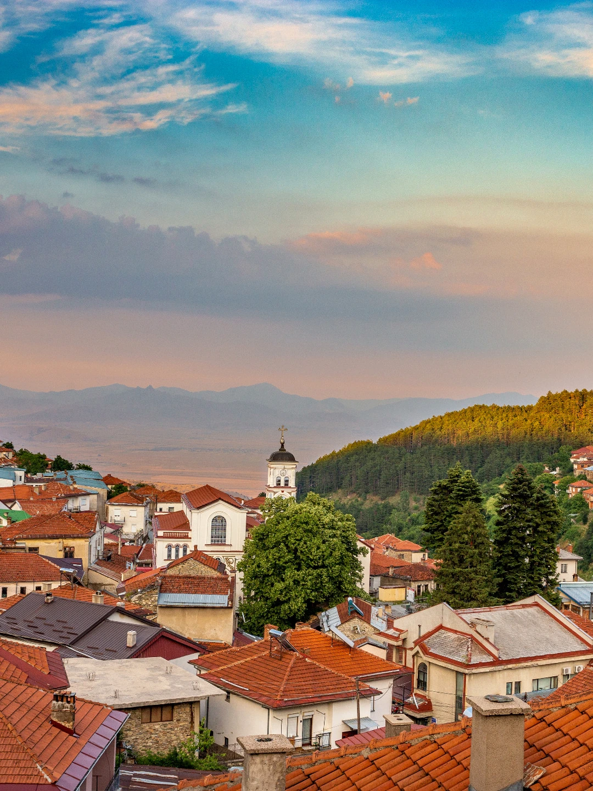
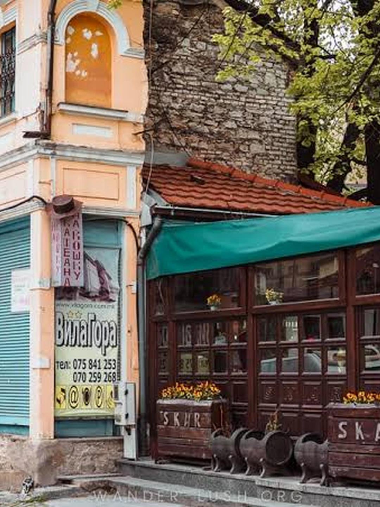
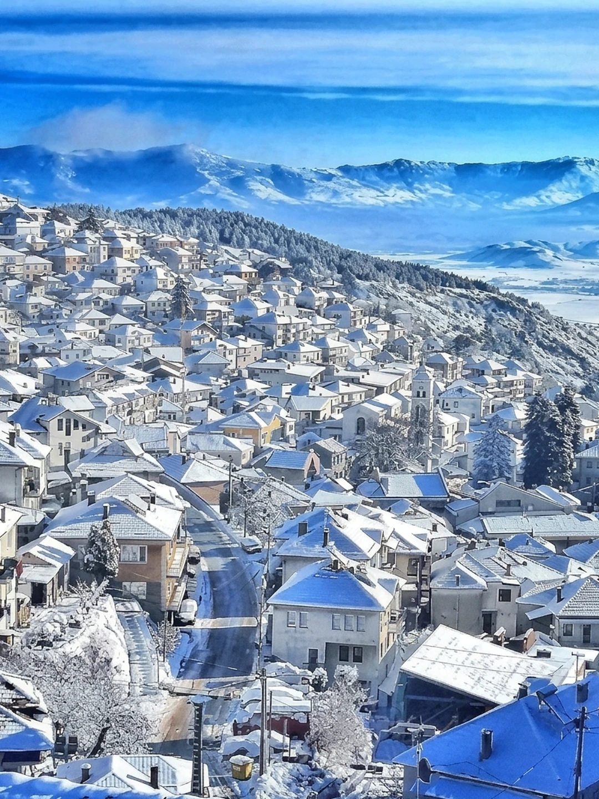
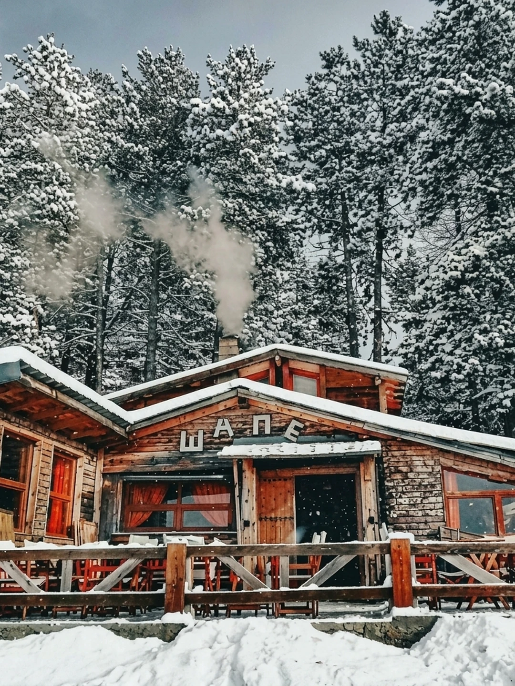
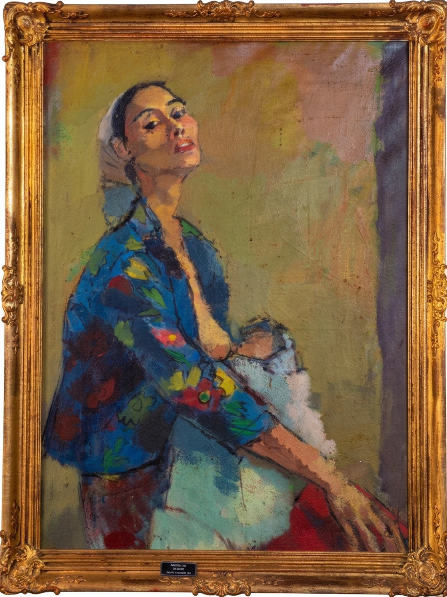
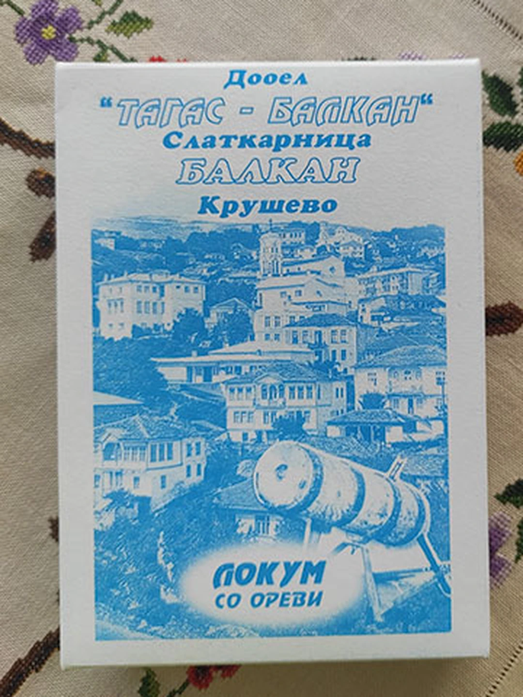
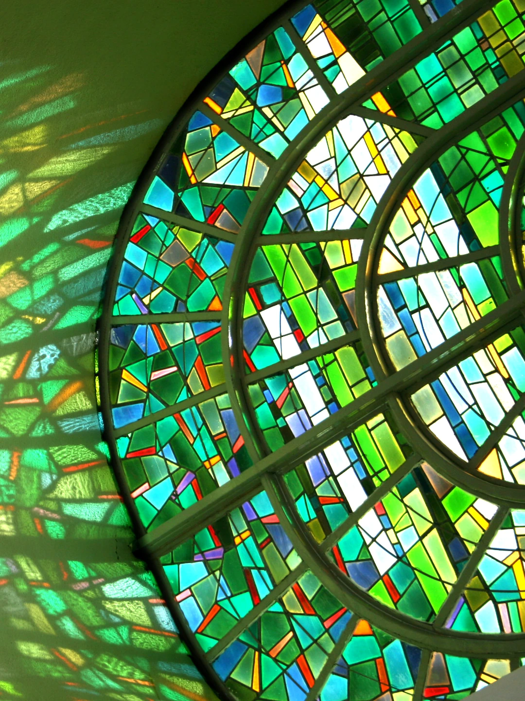
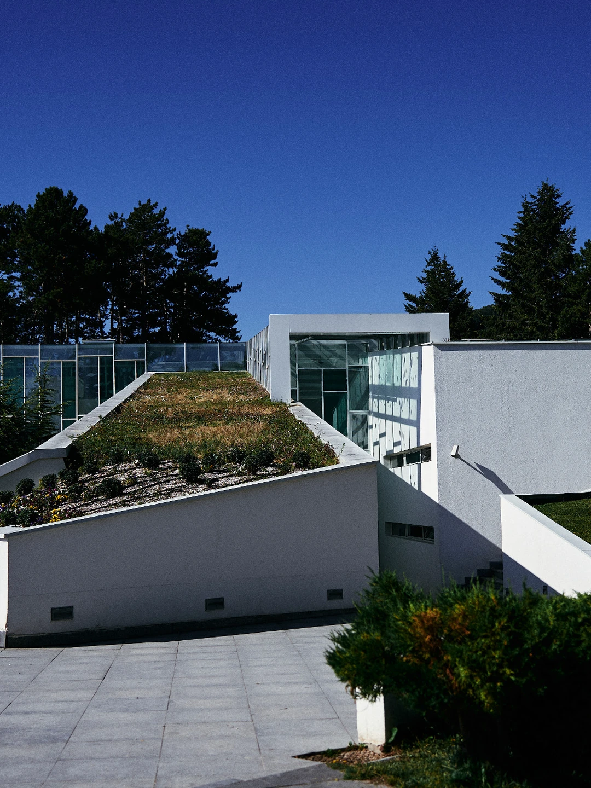

Overview
In Kruševo, a chairlift connects the town to the ski slopes through a beech forest. Spend the morning learning to turn on snow, then come down for paintings, a box of lokum, and a swim before dinner. The pleasures of a winter weekend here are close enough to fit into two days without spending them in the car.
The town rewards time on foot, too. Nineteenth-century houses climb the hillside, their upper floors projecting over the lanes. Nikola Martinoski’s paintings occupy one of those houses; on Gumenje, Makedonium and the Toše Proeski Memorial House give the next morning a very different scale. This route puts skiing first on Saturday and keeps Sunday’s cultural stops together, with proper meals between them.


Plan the weekend
- Arrive Friday — give yourself a full morning on snow. Book accommodation, ski rental, and a lesson ahead; ask your hotel to confirm the current instructor contact and meeting point.
- Check the snow — consult Stanič lift and slope status and the webcam. A working chairlift does not necessarily mean the ski runs are open. Ask about pedestrian return tickets and the last descent, too.
- Pack for the town as well — bring boots with grip for steep, icy lanes and swimwear for the spa. Ask your accommodation about winter road access and parking. The times below are a suggested route, not venue opening hours.
- Panorama Hotel & Spa — a 26-room hotel in the hotel zone, with ALTO restaurant and a glass-roofed indoor pool. A useful choice if you want the swim and dinner in this itinerary under one roof. Kocha Milenku 80; +389 72 808 808.
- Hotel Montana — family rooms, a game room, and a children’s play area in DOMO restaurant make this an option for a family weekend. LOK Bar looks across town; reserve a city-view room if the view matters to you. Pitu Guli bb; +389 48 477 121.
- A house in the old town — for a guesthouse stay, prioritize reliable heating and access on foot to the bazaar. Confirm the actual address and parking arrangement before booking; a short distance on a map can mean a steep climb.
- Šape — specify the bazaar restaurant or the ski-area location when booking: +389 78 377 580 or +389 48 477 809.
- Panorama — spa bookings: +389 72 808 808; ALTO tables and the mountain café: +389 72 807 807.
- Nikola Martinoski Gallery — the museum currently lists daily visiting hours of 9 a.m.–4 p.m. Arrange a guided visit in advance.
- Toše Proeski Memorial House — Tuesday–Sunday, 9 a.m.–4 p.m.; +389 48 477 888. Check holiday changes directly.
- Tagas-Balkan — Šula Mina bb; +389 71 692 154. Call ahead if collecting sweets before departure.
The weekend
Saturday

Start with the mountain. Stanič is a compact ski area with wide, gentle terrain suited to beginners, two ski lifts, and a two-seat chairlift connecting it to town. Book your first lesson and equipment before arrival so the morning goes into skiing rather than finding an instructor. More experienced skiers can ask about the red-marked run beneath the chairlift when snow coverage allows.
For friends who aren’t skiing, arrange a return chairlift ride and meet at Panorama All Seasons Adventure, the slopeside café serving drinks and light food. It gives the group a meeting place without requiring everyone to spend the morning on skis.

Šape has served Kruševo since 1982 and has two locations: one in the bazaar and another, built in mountain style, at the ski area. Choose the mountain location today so lunch belongs to the morning outside.
In an interview with Kajak, owner Žan Šape names Kruševo-style sausages, kare-kebapi, komitska pleskavica, and the house grne among its specialties. Order the sausages or ask what is cooking in the grne, the earthenware pot. Leave enough time to return to town before the gallery closes.

The gallery occupies a nineteenth-century house formerly owned by the Tahu family, built by Mijak craftsmen. Opened in 1968, it holds 61 works across painting, drawing, and printmaking. Look at how Martinoski builds a face with line and color, then spend time with the reconstructed domestic rooms: the setting deserves as much attention as the pictures.
This is a chance to go inside the architecture you have been seeing from the street. The ethnographic display includes a guest room and a Mijak room, bringing furniture and domestic space into the visit. For more on the painter, read Nikola Martinoski: Becoming a Painter.

Come back through the bazaar and follow the lanes into the old neighborhoods. Look up at the projecting upper floors and the painted façades; the houses make more sense at walking pace, where you can see how they fit against the slope.
Make Tagas-Balkan on Šula Mina your sweet stop. The family confectioner marked its centenary in 2021. Ask for celuvki, the crisp meringue sweets made with walnut or coconut, and compare walnut lokum with the hazelnut-and-coconut version. Buy a box to take home while the shop is open.
At Panorama’s spa, the indoor pool has a glass roof and windows overlooking Kruševo. There is also a hot tub and Finnish sauna. Give this part of the afternoon some room: after ski boots and a walk through town, an hour in the water is a good reason to stay the night.
Spa access is included for hotel guests; outside visitors can book a three-hour visit. Reserve ahead and confirm the current rate and any children’s access arrangements when booking.
Stay at Panorama for ALTO, whose large windows face the town and beech forest. Its menu covers traditional and international dishes, making it an easy place to bring a group with different appetites. Reserve a table rather than treating dinner as whatever is left after sightseeing.
If you are staying at Montana, keep the evening there instead: eat at DOMO and finish with a drink at LOK Bar. For the town view, come to LOK before dusk on your arrival day; Saturday’s dinner hour will already be dark.
Sunday

Go up to Gumenje for Makedonium, the Ilinden Monument by Jordan and Iskra Grabuloski, opened on August 2, 1974. Begin with the approach through the memorial landscape, then walk around the white concrete structure before going inside. Its projecting forms change with every angle.
Arrange interior access through Kruševo Museum in advance. Seeing the stained glass from within is part of the visit, rather than an optional extra after the familiar exterior photograph. Keep the morning here on Gumenje: the Toše Proeski Memorial House is your next stop.

The memorial house follows Toše’s life from childhood to his musical career, with sections devoted to everyday life, humanitarian work, faith, and his relationship with fans. It gives a visitor who knows only the songs a fuller account of the person.
Take time with the building, too. Designed by Dejan Sekulovski and Dejan Spasenovski with Ilija Božinovski, it opened in 2011. Its cross-shaped plan and long glazed surfaces make a second architectural encounter on the same hill, quite different from Makedonium.
Book Kruševska Odaja near the memorial house for lunch, keeping this part of the day on Gumenje. The restaurant lists stuffed pork fillet with cheese, mushrooms, and bacon among its dishes. Order something substantial and let lunch take an hour rather than fitting another stop into it.
Reservations: +389 75 421 947 or +389 75 421 946. Confirm the menu when booking, particularly for a group or dietary requirements.
With clear roads and good visibility, drive to Mečkin Kamen, associated with Pitu Guli and the defense of the Kruševo Republic during the 1903 Ilinden Uprising. The monument and the open landscape give the weekend a final view beyond the town.
If skiing is the reason you came, keep Sunday for the slopes instead and move the two Gumenje visits to a future trip. The itinerary is a way to spend the weekend, not a requirement to leave the snow while you are enjoying it. Before heading home, collect your box of lokum from Tagas-Balkan.
Planning checked November 2026 against SkiMacedonia, Kruševo Museum, the Toše Proeski Memorial House, and the venues linked above. Šape’s specialties are described in Kajak’s interview with its owner. Confirm seasonal operation, prices, and holiday hours directly before traveling.